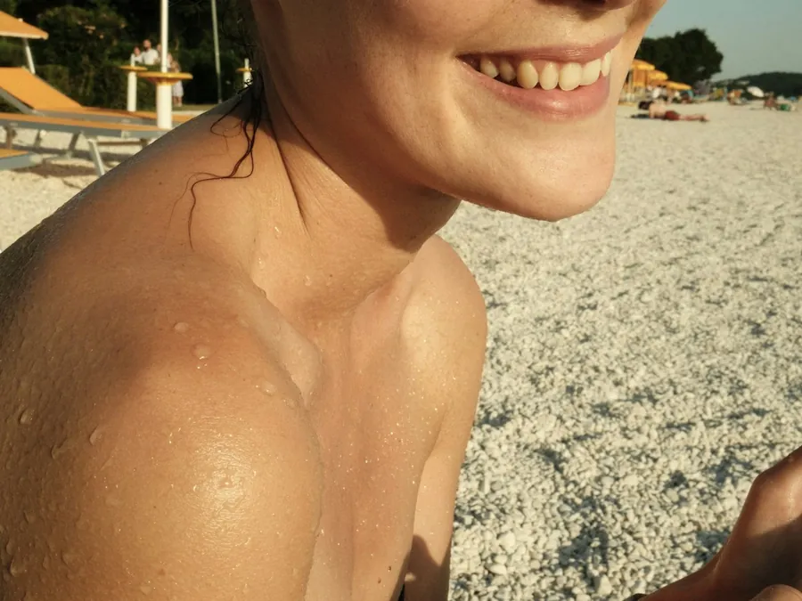
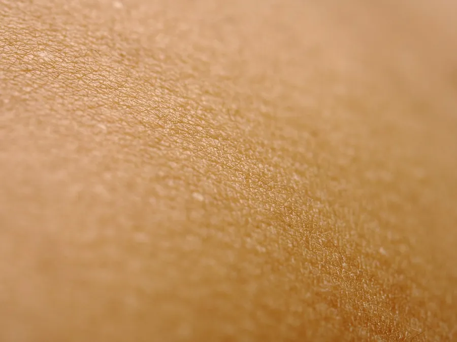

Antes de agendar
Skinboosters o bioestimuladores:
según lo que le falta a tu piel
Uno hidrata y le da brillo a la piel. El otro le devuelve firmeza con el tiempo. No resuelven lo mismo.
Llegas a la consulta con una queja que no sabes nombrar bien: "siento la piel opaca" o "ya no se ve tan firme como antes". Buscas en Google y te aparecen dos palabras que suenan parecido, skinboosters y bioestimuladores, y las dos prometen mejorar la piel. El problema es que no corrigen lo mismo, y aplicarte el que no te toca es gastar una cita sin resolver lo que te molesta.
Qué hace el skinbooster y qué hace el bioestimulador
El skinbooster son microinyecciones de ácido hialurónico no reticulado que se colocan justo bajo la superficie de la piel. Según la Sociedad Estadounidense de Cirujanos Plásticos (ASPS), son más superficiales que un relleno y no buscan dar volumen ni cambiar el contorno: trabajan la hidratación, la elasticidad y el brillo.
El bioestimulador de colágeno va más al fondo. No rellena ni hidrata: activa un proceso en tu propia piel para que produzca más colágeno. El resultado no se nota al salir de la cita, como con el skinbooster; aparece poco a poco, mientras tu piel va ganando firmeza por su cuenta.
Cómo saber cuál le falta a tu piel
La pregunta no es cuál tratamiento prefieres, sino qué te está fallando. Si lo que notas es piel seca, opaca o sin brillo, pero al pellizcarla con cuidado todavía se ve firme, el problema suele ser de hidratación y textura: ahí el skinbooster tiene sentido. Si lo que notas es que la piel ya no se ve tan tensa, que empieza a colgar un poco en mejillas o mandíbula, el problema es de firmeza: ahí entra el bioestimulador.
Esa diferencia no siempre es obvia a simple vista, y por eso la valoración presencial empieza examinando tu piel con la Dra. Valeria Enciso, médica estética, antes de recomendar cualquiera de los dos. No es una decisión que se tome por WhatsApp ni comparando fotos de redes sociales.
Por qué uno se nota antes que el otro
El skinbooster se ve más rápido porque el ácido hialurónico ya está haciendo su trabajo desde el momento en que se aplica: atrae agua y mejora la hidratación casi de inmediato, aunque el efecto completo tarda semanas en asentarse. El bioestimulador no tiene ese atajo: según la ASPS, el colágeno nuevo que produce tu piel toma tiempo en formarse, por eso el cambio se nota entre el segundo y el tercer mes, no antes. Ninguno de los dos es más efectivo que el otro; están resolviendo cosas distintas en tiempos distintos.
Lo que ninguno corrige, y los riesgos que sí existen
Si la flacidez ya es marcada, ni el skinbooster ni el bioestimulador alcanzan: ese tejido sobrante necesita algo distinto. Si es leve a moderada, los hilos tensores pueden ser una opción; si es más marcada, se evalúa una cirugía como el lifting facial. Tampoco sirven si lo que buscas es volumen en labios o pómulos; eso lo da el ácido hialurónico de relleno.
Todo procedimiento tiene riesgos, y estos no son la excepción. La información de la FDA sobre el skinbooster que aprobó menciona enrojecimiento, inflamación, morados, bultos o, muy rara vez, que el producto entre en un vaso sanguíneo y afecte la visión. Con los bioestimuladores, la FDA advierte algo distinto: a diferencia del ácido hialurónico, que se puede disolver con una enzima si el resultado no convence, retirarlos puede ser difícil o incluso imposible. Antes de decidir te explican cada riesgo y firmas un consentimiento informado.
La decisión final sale de tu valoración presencial en Medellín, donde la Dra. Valeria Enciso revisa tu piel y te dice si necesitas uno, el otro o ninguno todavía. Si lo que no tienes claro es la diferencia con otro inyectable, puedes leer también bioestimuladores de colágeno: qué son y para quién o bótox o ácido hialurónico: diferencias, con la misma idea de decidir según el examen y no según lo que te sugirió una amiga.
Procedimientos de esta guía
Esta guía es informativa y no reemplaza una valoración médica. La indicación, los tiempos de recuperación y la fecha de regreso los define tu especialista en persona. Todo procedimiento tiene riesgos y los resultados varían de una persona a otra.
Preguntas frecuentes
Preguntas frecuentes
¿El skinbooster y el bioestimulador son lo mismo?
No. El skinbooster suele llevar ácido hialurónico y se aplica para hidratar la piel y mejorar su textura. El bioestimulador no busca hidratar: activa la producción de colágeno propio para ganar firmeza. Cuál te conviene lo confirma tu médica mirando tu piel.
¿Cuál dura más, el skinbooster o el bioestimulador?
El bioestimulador: su efecto suele durar de 12 a 24 meses, según la zona y la sustancia. El skinbooster dura menos, de 6 a 9 meses, porque trabaja distinto: no estimula el colágeno a largo plazo, hidrata la piel desde adentro.
¿Puedo aplicarme los dos en la misma zona?
Eso se evalúa en la valoración presencial, no antes. Depende de qué tan hidratada o firme esté tu piel y de cuánto tiempo haya pasado desde tu última aplicación de cualquiera de los dos.
¿Cuál se nota más rápido?
El skinbooster: su efecto se ve entre 4 y 6 semanas. El bioestimulador es más lento porque depende de que tu piel produzca colágeno nuevo; se empieza a notar entre el mes 2 y el mes 3.
¿Ninguno de los dos sirve para la flacidez marcada?
No. Si la flacidez ya es marcada, ni el skinbooster ni el bioestimulador la corrigen. Si es leve a moderada, ahí entran los hilos tensores; si es más marcada, se evalúa una cirugía como el lifting facial.
Blog
Sigue leyendo.

Melasma: por qué aparece y cómo se controlaNo es una mancha cualquiera, y por eso no se trata con la primera crema que recomiendan en redes.Leer
SkinboostersHidratación profunda y luminosidad desde adentro.Vernoon Clinic
Tu valoración de skinboosters
Todo empieza con una conversación con nuestros especialistas.
Te respondemos en minutos por WhatsApp, en horario de atención. Resolvemos tus dudas y agendamos tu valoración presencial; por WhatsApp no diagnosticamos. Por qué noon